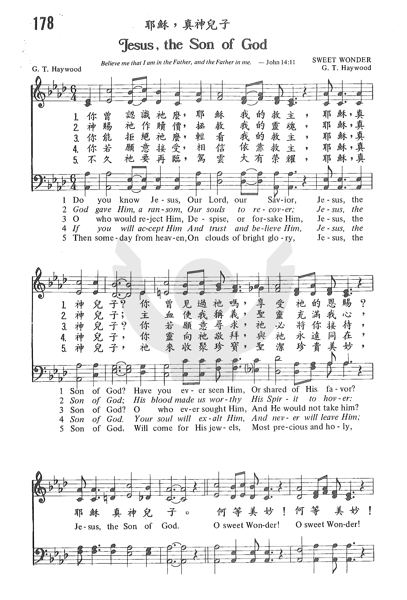
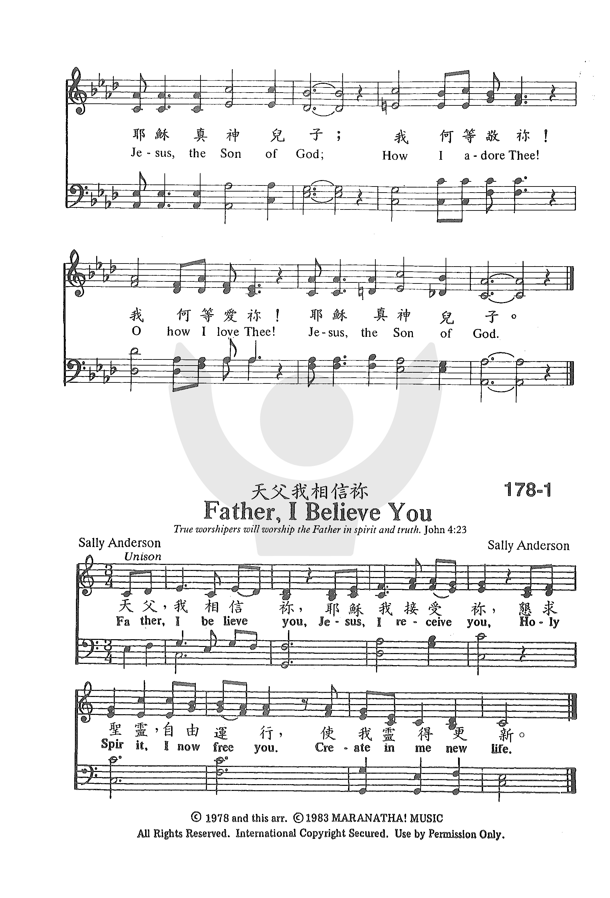

1167
Jesus The Son Of God _G.
T. Haywood
耶稣，真神儿子
|
|
|
|
1 Do you know Jesus,
Our Lord, our Savior,
Jesus, the Son of God?
Have you ever seen Him,
Or shared of His favor?
Jesus, the Son of God.
Refrain:
O sweet Wonder!
O sweet Wonder!
Jesus, the Son of God;
How I adore Thee!
O how I love Thee!
Jesus, the Son of God.
2 God gave Him, a ransom,
Our souls to recover;
Jesus, the Son of God;
His blood made us worthy
His Spirit to hover:
Jesus, the Son of God. [Refrain]
3 O who would reject Him,
Despise, or forsake Him,
Jesus, the Son of God?
O who ever sought Him,
And He would not take him?
Jesus, the Son of God. [Refrain]
4 If you will accept Him
And trust and believe Him,
Jesus, the Son of God.
Your soul will exalt Him,
And never will leave Him;
Jesus, the Son of God. [Refrain]
5 Then someday from heaven,
On clouds of bright glory,
Jesus, the Son of God,
Will come for His jewels,
Most precious and holy,
Jesus, the Son of God. [Refrain]
Source: Yes,
Lord!: Church of God in Christ hymnal #256
|
你曾認識祂麼，耶穌我的救主，
耶穌，真神兒子?
你曾見過祂嗎，享受祂的恩賜?
耶穌真神兒子。
何等美妙!何等美妙!
耶穌真神兒子;我何等敬你!
我何等愛你! 耶穌真神兒子。
神賜祂作贖價，拯救我的靈魂，
耶穌，真神兒子;
主血使我稱義，聖靈充滿我心，
耶穌真神兒子。
何等美妙!何等美妙!
耶穌真神兒子; 我何等敬你!
我何等愛你! 耶穌真神兒子。
你能拒絕祂麼，輕看我的救主，
耶穌，真神兒子?
你若願意尋求，祂必將你接待，
耶穌真神兒子。
何等美妙!何等美妙!
耶穌真神兒子;
我何等敬你!
我何等愛你! 耶穌真神兒子。
你若願意接受，相信依靠救主，
耶穌，真神兒子，
你靈向祂敬拜，與祂永遠同在，
耶穌真神兒子。
何等美妙!何等美妙!
耶穌真神兒子; 我何等敬你!
我何等愛你! 耶穌真神兒子。
不久祂要再臨，駕雲大有榮耀，
耶穌，真神兒子，
祂來收聚珍寶，聖潔珍貴美妙，
耶穌真神兒子。
何等美妙!何等美妙!
耶穌真神兒子; 我何等敬你!
我何等愛你! 耶穌真神兒子。 |
|
https://www.zanmeishige.com/tab/25535.html?songbook=1&index=178


|
|
|
|

- Jesus the Son of God (Melodies of Praise #50) G. T. Haywood •
solo piano hymn
-
Oh Sweet Wonder
https://youtu.be/qWDU8XxXSyk
Dedicated to the memory of Bishop Garfield T. Haywood, The 1st Presiding
Bishop of The Pentecostal Assemblies of The World, Inc. who was the writer
of this song.
1167
Jesus The Son Of God 耶稣，真神儿子
|
Short Name: |
G. T. Haywood |
|
Full Name: |
Haywood, G. T. (Garfield Thomas), 1880-1931 |
|
Birth Year: |
1880 |
|
Death Year: |
1931 |
Garfield Thomas Haywood
(July 15, 1880 – April 12, 1931)
was an African-American
pastor and song writer who served as Presiding Bishop of the Pentecostal
Assemblies of the World from 1925 to 1931.
Haywood was born to
Bennett and Pennyann Haywood in Greencastle,Indiana, in 1880 and moved to
Haughville, a neighborhood in Indianapolis, at the age of three. As a child,
he attended School 52 and then Shortridge High School. Haywood was employed
by the Indianapolis Freeman and Indianapolis Recorder news papers as a
cartoonist.
In 1909, Haywood founded
Christ Temple church. Haywood's influence crossed ethnic boundaries; by
1913, Christ Temple had a bi-racial membership of 400 to 500 and later grew
to 1500. Around 1915, Haywood received a copy of Frank Ewart's paper Meat
in Due Season which argued for Jesus' Name doctrine. In
response, Haywood invited the evangelist Glenn A. Cook to preach at Christ
Temple, resulting in Haywood and his congregation converting to Oneness
Pentecostalism and facilitating the spread of Oneness Pentecostalism
throughout Indiana.
The third general council
of the Assemblies of God convened in October 1915 on the agenda was a debate
on the merits of the new Jesus'-name doctrine vs the traditional trinitarian
doctrine. Haywood and E. N. Bell spoke on behalf of the Jesus' Name doctrine
and Collins and Jacob Miller spoke against. The result was a draw and it was
agreed to readdress the topic at the fourth general council in October 1916.
At the fourth general council a statement of faith was enacted which soundly
rejected Jesus'-name doctrine causing just over one fourth of the ministers
including Haywood to leave the Assembles of God. In 1911 Haywood had become
affiliated with the Pentecostal Assemblies of the World (PAW) and after his
conversion helped convert the origination to Oneness Pentecostalism. Many of
the former Assemblies of God ministers that left in 1916 formed the General
Assembly of the Apostolic Assemblies which at the start of WWI merged with
the PAW in order for its minsters to obtain noncombatant statues. The new
and interracial organization appointed Haywood as its general chairman. By
1924 the PAW split on racial lines due to logistical and social problems
created by Jim Crow laws and Haywood was appointed Bishop of the newly
reorganized PAW.
Haywood composed many
gospel songs including "Jesus, the Son of God", "I See a Crimson Stream of
Blood", and "Do All in Jesus’ Name". Many of his songs were published in The
Bridegroom Songs, which was published by Christ Temple. His songs are known
for Oneness Pentecostal themes. Haywood was also an author and Oneness
apologist. He wrote tracts, such as "The Victim of the Flaming Sword" and
"The Finest of Wheat" as well as published Garfield Thomas Haywood (July 15,
1880 – April 12, 1931) was an African-American pastor and song writer who
served as Presiding Bishop of the Pentecostal Assemblies of the World from
1925 to 1931.
Haywood was born to
Bennett and Pennyann Haywood in Greencastle,Indiana, in 1880 and moved to
Haughville, a neighborhood in Indianapolis, at the age of three. As a child,
he attended School 52 and then Shortridge High School. Haywood was employed
by the Indianapolis Freeman and Indianapolis Recorder news papers as a
cartoonist.
In 1909, Haywood founded
Christ Temple church. Haywood's influence crossed ethnic boundaries; by
1913, Christ Temple had a bi-racial membership of 400 to 500 and later grew
to 1500. Around 1915, Haywood received a copy of Frank Ewart's paper Meat in
Due Season which argued for Jesus' Name doctrine. In response, Haywood
invited the evangelist Glenn A. Cook to preach at Christ Temple, resulting
in Haywood and his congregation converting to Oneness Pentecostalism and
facilitating the spread of Oneness Pentecostalism throughout Indiana.
The third general council
of the Assemblies of God convened in October 1915 on the agenda was a debate
on the merits of the new Jesus'-name doctrine vs the traditional trinitarian
doctrine. Haywood and E. N. Bell spoke on behalf of the Jesus' Name doctrine
and Collins and Jacob Miller spoke against. The result was a draw and it was
agreed to readdress the topic at the fourth general council in October 1916.
At the fourth general council a statement of faith was enacted which soundly
rejected Jesus'-name doctrine causing just over one fourth of the ministers
including Haywood to leave the Assembles of God. In 1911 Haywood had become
affiliated with the Pentecostal Assemblies of the World (PAW) and after his
conversion helped convert the origination to Oneness Pentecostalism. Many of
the former Assemblies of God ministers that left in 1916 formed the General
Assembly of the Apostolic Assemblies which at the start of WWI merged with
the PAW in order for its minsters to obtain noncombatant statues. The new
and interracial organization appointed Haywood as its general chairman. By
1924 the PAW split on racial lines due to logistical and social problems
created by Jim Crow laws and Haywood was appointed Bishop of the newly
reorganized PAW.
Haywood composed many
gospel songs including "Jesus, the Son of God", "I See a Crimson Stream of
Blood", and "Do All in Jesus’ Name". Many of his songs were published in The
Bridegroom Songs, which was published by Christ Temple. His songs are
known for Oneness Pentecostal themes. Haywood was also an author and Oneness
apologist. He wrote tracts, such as "The Victim of the Flaming Sword" and
"The Finest of Wheat" as well as published The Voice in the
Wilderness, a publication that became the official organ of the
Pentecostal Assemblies of the World in 1925.
After his death in 1931,
Haywood was buried in Crown Hill Cemetery, and in 1980, the city of
Indianapolis renamed the segment of Fall Creek Drive where Christ Temple is
located Bishop Garfield T. Haywood Memorial Way. The Voice
in the Wilderness, a publication that became the official organ of the
Pentecostal Assemblies of the World in 1925.
After his death in 1931,
Haywood was buried in Crown Hill Cemetery, and in 1980, the city of
Indianapolis renamed the segment of Fall Creek Drive where Christ Temple is
located Bishop Garfield T. Haywood Memorial Way.
--en.wikipedia.org/wiki
Tune Information
|
Title: |
[Do you know Jesus] |
|
Composer: |
G. T. Haywood |
|
Incipit: |
53232 11161 65111 |
|
Key: |
A♭
Major |
|
Copyright: |
Public Domain |
神为什么有儿子？（申四39，约三16，三位一体的问题）
神為什麼有兒子？（申四39，約三16，三位一體的問題）
舊約告訴我們：
申4﹕39 天上地下惟有耶和華他是神，除他以外，再無別神。
申6﹕4 以色列啊，你要聽！耶和華我們
神是獨一的主。
賽44﹕6 我是首先的，我是末後的，除我以外再沒有真神。
就是說﹕只有耶和華是“唯一、獨一的真神，既是首先，又是末後的，除祂以外，沒有其他“首先的，末後的”！
但是新約說：
約3﹕16 神愛世人，甚至將他的獨生子賜給他們，……
徒7﹕56 ……我看見天開了，人子站在神的右邊。
那上帝為什麼有兒子？祂和我們一樣，會結婚生子的嗎？
（一）首先，耶和華（父神）是唯一、獨一的真神，耶穌又是神！
這正是三位一體的問題。簡單解釋如下﹕
--------------------------------------------------
-----------------------------------
基督徒相信聖經教導：獨一的真神永遠以三個位格存在。我們可從五句簡單的話，說明三位一體的真理：
（1）只有一位真神：「因為只有一位 神，在 神和人中間，只有一位中保……」（提前二5﹕參看申四35﹕六4﹕賽四十三10）。
但是，聖經也表示：
（2）聖父是神：「只有一位神，就是父，萬物都本於他……」（林前八6﹕參看約十七1-3﹕林後一3﹕腓二11﹕西一3﹕彼前一2）。
（3）耶穌基督，乃聖子，是神：「[耶穌]稱神為他的父，將自己和神當作平等。」（約五18）「並等候至大的神，和我們［或譯∶ 神─我們］救主耶穌基督的榮耀顯現。」（多二13﹕參看約廿28﹕約一1﹕羅九5﹕彼後一1）。
（4）聖靈具有位格，是永存的，所以是神。聖靈有位格：「只等真理的聖靈來了，他要引導你們明白［原文作進入］一切的真理﹕因為他不是憑自己說的，乃是把他所聽見的都說出來，並要把將來的事告訴你們。」（約十六13）聖靈是永存的：「基督藉著永遠的靈，將自己無瑕無疵獻給神，他的血豈不更能洗淨你們的心……」（來九14）所以聖靈也是神：「彼得說，亞拿尼亞為甚麼撒但充滿了你的心，叫你欺哄聖靈……你不是欺哄人，是欺哄神了。」（使五3-4 ）。
而且，聖父、聖子、聖靈，不是這位獨一真神的三個名字而矣，因為﹕
（5）父、子、聖靈是三個清楚獨特的位格：「所以你們要去，使萬民作我的門徒，奉父子聖靈的名，給他們施洗。」（太廿八19）﹕「願主耶穌基督的恩惠、 神的慈愛、聖靈的感動，常與你們眾人同在。」（林後十三14）。
所以，三位一體是唯一能叫所有經文和諧的詞組。
----------------------------------------------------------
（二）什麼耶穌是神的兒子？
在拙作《誠實辨明聖經真理》第四章「耶穌基督是誰？」（http://www.chineseapologetics.net/cults/JW/disc-truth-04.htm）已經有解釋。
現在簡單重列﹕
（1）“獨生子”
“獨生子” 的意思不是只有祂才是神創造的。其意思是“獨特的”。如果我們調查希臘文原文 [2]，翻譯為「獨生」的希臘文字是「monogenes」（SN﹕3439）的意思是﹕獨特的、獨一無二、無與倫比之意。
（2）“上帝的兒子”就是真神上帝
聖經中“神的兒子”可能指不同的個體﹕
· 天使（天上的靈體）﹕「神的眾子來侍立在耶和華面前，撒但也來在其中。」（約伯記1﹕6）
· 墮落天使﹕「神的兒子們看見人的女子美貌，就隨意挑選，娶來為妻。」（創世記6﹕2）
· 以色列人﹕「然而以色列的人……必對他們說，你們是永生神的兒子。」（何西亞書1﹕10）
· 人類﹕「以挪士是塞特的兒子，塞特是亞當的兒子，亞當是神的兒子。」（路加福音3﹕38）
· 不正直的官長﹕「我曾說，你們是神，都是至高者的兒子。」（詩篇82﹕6）
但上邊已經解釋過，耶穌不是這些，祂是“獨生子”，上帝一個非常獨特的兒子！但為什麼聖經要用“上帝的兒子“來稱呼祂呢？有幾個原因﹕
· 表示生命相同
這是非常簡單的道理。人的兒子是人﹕老虎的兒子是老虎﹕貓咪的兒子是貓咪。所以上帝的兒子，也是上帝，完全相同的生命。這不是一個人間父母“生”孩子的“生”。
· 關係親密
耶穌和天父的關係非常親密，想沒有人可以否認。當耶穌受洗，從水�堣W來的時候，天父說﹕「這是我的愛子，我所喜悅的。」（馬太福音3﹕17）
· 顯示和父神是兩個位格
為什麼不直接使用“上帝”這字呢？其中原因之一，是為了表示耶穌基督和父上帝是兩個位格（person），正如約翰福音1﹕1﹕「道與神同在，道就是神。」請見下一章有關三位一體的討論。
· 基督在永�琱仇Q生
彌賽亞預言詩中﹕「你是我的兒子，我今日生你」（詩篇2﹕7）這話被引用於﹕
（a）祂的降臨﹕「就在這末世，藉著他兒子曉諭我們，……所有的天使，神從來對那一個說，『你是我的兒子，我今日生你。』……」（希伯來書1﹕1-5）
（b）祂的復活﹕「叫耶穌復活了，正如詩篇第二篇上記著說，『你是我的兒子，我今日生你。』」。（使徒行傳13﹕33）
所以「你是我的兒子，我今日生你」是指著基督說的。但是為什麼說“今日生”呢？原因﹕因為中文沒有時式，英語卻有，所以才能顯出來。英語聖經，都作「I
have begotten You」或「have
become your Father」，就是說，一直以來，都
“生”了，讓我們知道耶穌不是有一個“生”的開始，“生”不過指生命的關係。
我們無法不結論說﹕耶穌，上帝的兒子，就是真神上帝。
http://www.chineseapologetics.net/Bible-defense/Bible-diff/S_trinity-sonofgod.htm